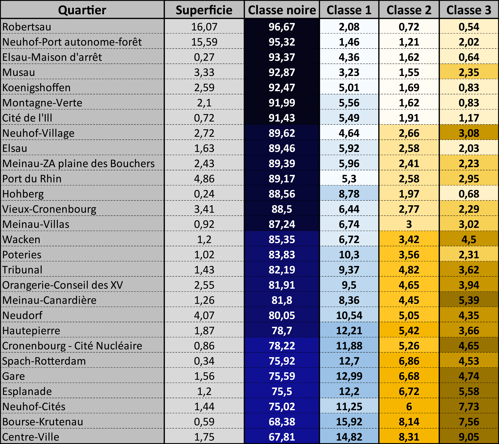
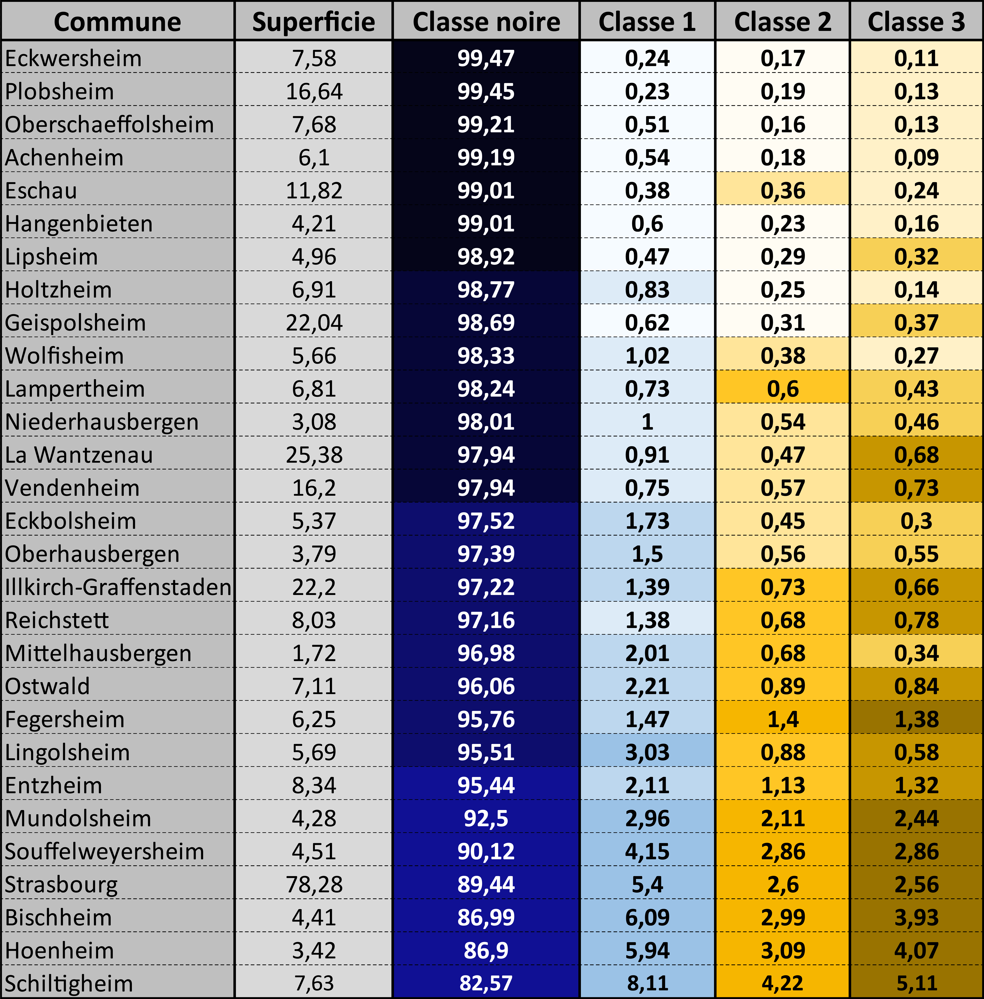

Etat des lieux dans les communes de l'Eurométropole et dans les quartiers de Strasbourg
La carte présentée ci-contre, renseigne sur la part de la classe noire dans les communes de
l'Eurométropole
ainsi que dans les quartiers de la ville de Strasbourg.
La classe noire correspond aux zones du territoire ayant une intensité lumineuse nulle. Dans ces zones, il n'y a
donc aucune source de lumière artificielle.
Les communes d'Osthoffen, de Kolbsheim, de Breuschwickersheim
et de Blaesheim visiblent sur la carte ne font pas parties de la zone photographiée
Elles figurent tout de même sur cette carte étant donné qu'elles font parties de l'Eurométropole.
A partir de la classification réalisée, le poids que chaque classe a été calculé pour les communes de
l'Eurométropole et les quartiers de la ville de Strasbourg.
Les tableaux ci-dessous présentent les résultats, en pourcentage, par commune (à gauche) et par
quartier (à droite).
Les aplats de couleurs sont discrétisés selon les quantiles, calculés séparément pour les communes et les quartiers.
En ce qui concerne la carte intéractive ci-contre, une discrétisation selon les quantiles a également été appliquée, à la différence
qu'elle a été calculée sur les valeurs des commnes et des quartiers regroupées.
 Les superficies sont exprimées en km²">
 Les superficies sont exprimées en km²">